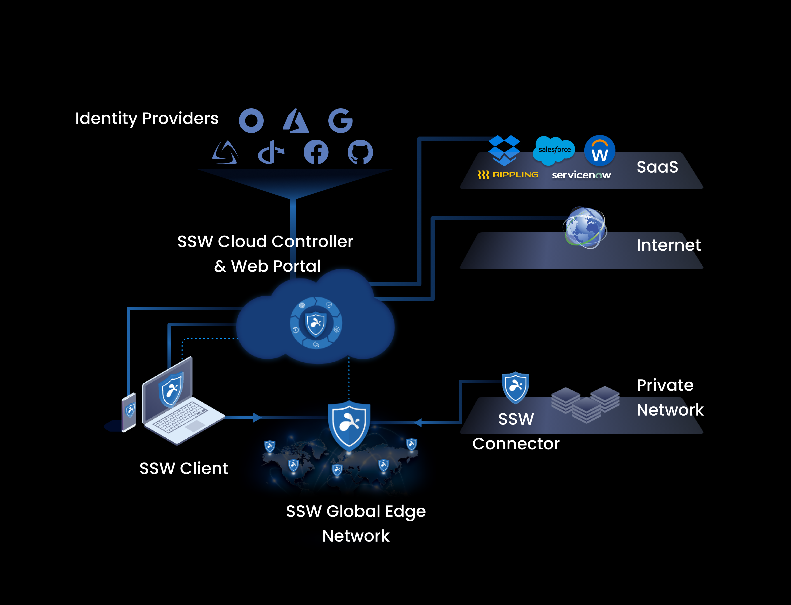

Quick start
As described in Get started with Splashtop Secure Workspace, Splashtop Secure Workspace (SSW) is an easy-to-use, cost-effective, and integrated security platform specifically designed for small to mid-size organizations. The design is based on a zero trust model for minimizing the attack surface and mitigating risks in a network infrastructure.
You can use this Quick start guide to help you determine whether Splashtop Secure Workspace is a solution for the challenges you face in your organization.
Architecture at a glance
Instead of having to use many individual and specialized products, Splashtop Secure Workspace provides you with an integrated and holistic security platform. It offers broad coverage for remote access with high performance, low overhead, and a streamlined experience for both administrators and users. With the Splashtop Secure Workspace architecture, you can implement enterprise grade security without the enterprise IT budget.
At a high level, the basic architecture for the platform looks like this:

In simplified form, Splashtop Secure Workspace (SSW) consists of the following components.
- The Splashtop Secure Workspace app represents the clients that run on computers and devices that need access to applications.
- The Splashtop Secure Workspace cloud provides configuration, evaluation, and orchestration services to the network.
- THe Splashtop Secure Workspace network edge services act as a data layer between the cloud and the connection points that are deployed as virtual nodes closest to organization resources.
- The Splashtop Secure Workspace connectors represent the network gateways in geographical regions closest to organization resources.
Get started
To find out if Splashtop Secure Workspace solves the security challenges your business faces, you can request an invitation to participate in the Beta program. After you register, you’ll receive an email invitation with information about your default account and the organization URL that’s been created for you to use.
Your default account will be either assigned a Super Administrator role with the ability to create and manage multiple organizations or an Organization Administrator role with the ability to manage a single organization.
To get started by running Splashtop Secure Workspace on a single computer, here’s a preview of what you’ll do:
- Activate your account.
- Install the desktop client.
- Connect the desktop client to the network.
- Discover an application.
- Open the application.
You can also watch this two-minute Getting started video demonstration.
Activate your account
After you register, check your Inbox for an email notification from Splashtop. This email notification has the information you need to sign in and activate your account in the Splashtop Secure Workspace cloud.
To activate your account:
-
Click the Get started link in the email or copy and paste the URL into your browser.
-
Set the password to activate your account, then click Next.
After you set a password, you are prompted to set a passcode for managing secrets in a private vault for your account. For simplicity, you can use the same password you selected for your username or for better security choose something else for managing secrets in your vault.
-
Click Confirm to save the password for your account and your private vault.
After you complete these three steps, you’re ready to start exploring the Splashtop Secure Workspace administrative portal.
By default, the administrative portal displays the Overview dashboard for your organization and a navigation panel for accessing and interacting with different Splashtop Secure Workspace features. The Overview dashboard won’t display any information until you start configuring organization details and security policies.
For demonstration purposes, this Quick start assumes that your local computer is part of a private network that you’ll be using for testing and evaluating Splashtop Secure Workspace features. Therefore, the next step is to download and install a Splashtop Secure Workspace desktop client on the local computer. However, you can follow similar steps to download and install the Splashtop Secure Workspace desktop client on any computers that host applications in your private network.
Install the desktop client
To download and install a Splashtop Secure Workspace desktop client:
-
Click Devices, then click Downloads to display the list of supported Splashtop Secure Workspace desktop clients.
-
Scroll to find the desktop client for your operating system, then click Download.
For example, select Mac Apple Silicon to download the desktop client for a macOS computer with an Apple Silicon chip.
Depending on the features you want to test and evaluate, you might want to download other software. For example, if you want to explore security policies for mobile devices, you can scan the QR code to install the mobile client on an Android or iOS phone.
-
Open the downloaded file and follow the installation instructions to install the software.
Connect the desktop client
The Splashtop Secure Workspace desktop client connects to the Splashtop Secure Workspace network edge services through a dedicated network gateway called a connector.
To run a connector for the desktop client you just installed:
-
Open Secure Workspace on your desktop or device, then click Next step.
For example, if you installed the desktop client on macOS, go to Applications and open Secure Workspace.
-
Type the name of your organization, then click Continue.
After you connect to an organization for the first time, it will be displayed for you to select the next time you sign in. If you have access to more than one organization, you’ll see them listed for quick access each time you sign in using the Splashtop Secure Workspace desktop client.
-
Type your Username and Password, then click Sign in.
-
Click Download PDF to download a PDF that holds your recovery codes.
You only see the option to download recovery codes the first time you sign in. If you ever lose or forget the password for your private Splashtop secrets vault, you can use the information in the PDF to recover access. Be sure to store this information in a safe location and create a backup copy.
After you save your recovery codes, you’ll see the Secure Workspace client portal. You don’t have any applications or network connections yet, so there’s no data to display. The next step is to connect to a network edge service using Splashtop Secure Workspace.
-
Click Connector.
By default, the connector location is prepopulated with a network location closest to your current location.
-
Click Run Connector to connect to the Splashtop Secure Workspace network edge.
Discover and add applications
After Splashtop Secure Workspace connects to the network edge service, you can try to discover applications that you have access to by clicking Discover applications. If no applications are discovered, check whether the local network you are connecting to has any applications or services configured for remote access.
Splashtop Secure Workspace can discover applications that use any of the following connection protocols:
- Hypertext Transfer Protocol (HTTP or HTTPS).
- Remote Desktop Protocol (RDP).
- Virtual Network Connection (VNC).
- Splashtop Desktop Protocol (SDP).
- Secure Shell (SSH).
- Kubernetes client API.
- Telnet protocol.
For example, if you installed the desktop client on macOS, go to System Settings and search for Sharing and turn on Screen Sharing, a virtual network client.
If you have a virtual or physical network available for testing, turn on Remote Login to try accessing the computer using a secure shell (ssh) connection.
To discover applications:
-
Turn on Screen Sharing or Remote Login.
-
Verify the Splashtop Secure Workspace desktop client connector status is Connected.
-
Click Discover applications.
-
Select the discovered application, then click Add.
Open an application
After you discover and add an application to the desktop client, you can sign on and use the application locally from the desktop client or remotely from the administrative portal.
To see the experience from a user's point of view, add a new user account as described in Add users and groups, then use that account to access the application you just added. For demonstration purposes, the application in the Quick start is the Apple Remote Desktop.
To open the application from the Splashtop Secure Workspace desktop client:
-
Click Applications.
-
Click Open Browser.
-
Sign in using valid credentials for the selected application.
Now, you’re all set to continue working as a secure application user.
Summary and next steps
You’ve just had your first look at two important parts of the Splashtop Secure Workspace:
-
The web-based administrative portal where you clicked Devices and Downloads to get the Splashtop Secure Workspace desktop client.
-
The Splashtop Secure Workspace desktop client application where you selected a Splashtop Secure Workspace connector and added local applications.
You’ve also seen how to connect to the Splashtop Secure Workspace network edge. However, this Quick start is only a simplified introduction to the Splashtop Secure Workspace administrative and user experiences.
Before moving on to more complex scenarios—like setting up access to cloud-based applications and crafting security policies—take a moment to explore the features available in the Splashtop Secure Workspace desktop client and how to navigate to those features using a minimized desktop client.
When you are ready to start configuring your network to test and evaluate features, see the following topics: